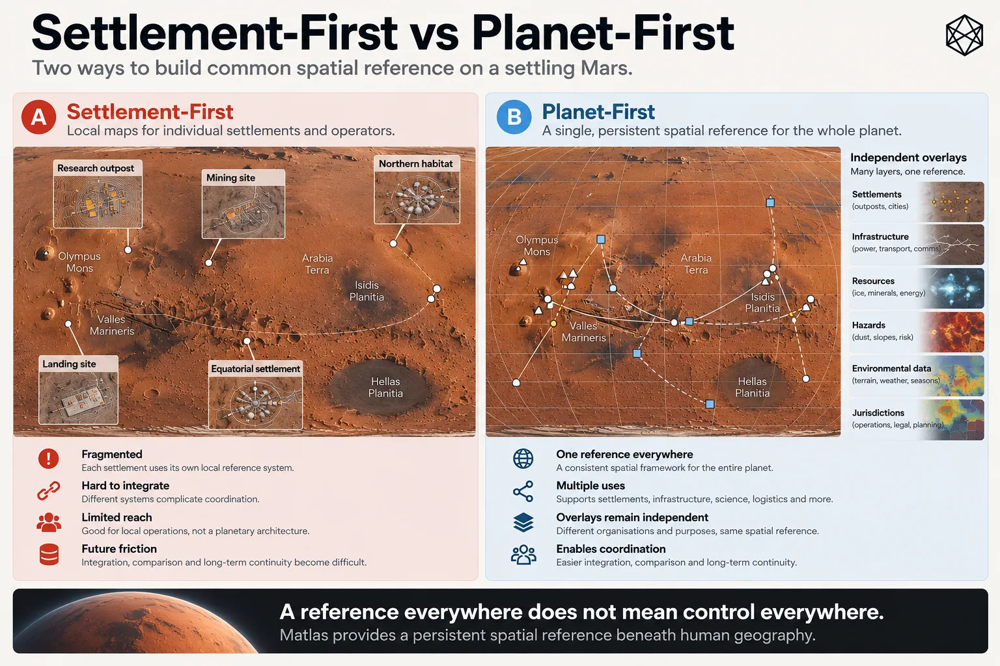

Start With the Planet
Coverage Without Territory
The obvious way to build geography on an empty planet is to begin where the people are.
Give the first settlement a useful local map. Let the next settlement create its own. Extend each system as roads, industrial sites and neighbouring communities appear, then connect them when the need becomes obvious. Most of Mars can remain untouched because, for the moment, almost nobody is doing anything there.
There is a lot to like about this approach. It is restrained, responsive and leaves communities free to develop systems suited to their own circumstances. A mining settlement may organise its surroundings differently from a scientific base; a dense city will eventually need distinctions that make no sense around a remote fuel depot. There is no good reason to force every community to use the same streets, neighbourhoods or local names merely because they occupy the same planet.
For local geography, I would encourage exactly that diversity.
The question is what should sit underneath it:
Can you divide the whole planet without claiming the whole planet?
For founding Mars, I think the answer is yes — and that starting with the planet is the better design.
The inconvenient importance of empty Mars
Imagine two settlements eight hundred kilometres apart.
Almost nobody lives between them. Yet a rover convoy crosses the terrain. A communications relay sits somewhere along the route. Scientific teams survey parts of it. Engineers compare future transport corridors, while emergency planners identify diversion points and shelters.
The space between the settlements is empty in one sense and already useful in another.
That distinction matters more on founding Mars than it does across most familiar terrestrial landscapes. Settlement may remain extremely sparse while science, transport, communications, autonomous systems and resource exploration range across very large distances. A piece of ground can become operationally important decades before it becomes inhabited, while some areas may matter precisely because nobody should build there.
A settlement-first approach can cope with this for quite a while. Each community can extend its own geography outward along roads and operating routes, while latitude and longitude remain the common language between them. With two or three settlements and a handful of external sites, that may be all anybody needs.
The difficulty arrives gradually.
A third settlement appears halfway between the first two. What used to be peripheral ground becomes central to all three. Scientific datasets already refer to one set of local areas, infrastructure records to another, while the new settlement quite reasonably develops its own vocabulary and operational divisions. None of this is catastrophic; Earth survives thousands of such interfaces every day.
But Mars has the unusual luxury of deciding whether to manufacture them first.
A planet-first reference reverses the sequence. The common spatial identity exists before anyone knows where the tenth, hundredth or thousandth settlement will appear. Local geographies can still develop wherever they are useful, but future settlement does not require the underlying planet to be reorganised each time civilisation reaches somewhere new.
The geography becomes useful before the population arrives.
That is the first reason to start globally.
One common substrate

Read a description of this illustration
The left-hand pattern has independent geographic schemes extending outwards from settlements. The right-hand pattern starts with a common planet-wide reference while permitting local overlays and names.
There is also a familiar architectural problem hiding inside the map.
If every settlement develops a completely independent spatial system, each eventually needs some way to interact with the others. A route beginning in Settlement A may cross areas defined by Organisation B before ending in Settlement C. Software needs conversion rules. Contracts inherit local identifiers. Historical data accumulates against boundaries that may mean little outside the institution that created them.
As the number of systems increases, the number of possible interfaces increases with it.
A common underlying layer changes the pattern. Each local system needs primarily to understand the shared reference beneath it rather than every other local system directly. The local geographies remain free to differ; what becomes common is only the physical substrate they refer back to.
That distinction matters. A city can create its own street names. A mine can use a local engineering grid. A scientific institute can operate a specialised analytical system. A transport network can use route kilometre markers. None of them has to abandon the representation best suited to its work.
They simply share an answer to the more primitive question: which piece of Mars is this?
The same architecture can extend across terrain that nobody currently cares about. If spatial identity is generated by rule rather than individually assigned, covering an uninhabited region does not require administrators to visit it and issue certificates to the rocks. The system merely needs to be able to produce the same answer if somebody asks.
That gives the common layer an attractive characteristic:
present everywhere, intrusive nowhere.
Every location can have an identity without every location needing a sign, a name, an office or a resident. Most Martians may never encounter the references attached to most of the planet, just as nobody needs to memorise the identifiers of every mapping tile or telephone number on Earth.
Global underneath does not have to mean cluttered above.
Drawing lines without claiming land
The planet-first choice creates an immediate problem of appearance.
Draw lines across Mars, colour the resulting areas and give them identifiers, and the map begins to resemble a political atlas. Humans have spent so long reading authority into coloured territories that a line across a map rarely remains visually innocent.
So we need to be precise about what the lines mean.
A reference boundary makes a narrow technical statement: a point on one side belongs to one reference unit; a point on the other belongs to another. That distinction lets software, maps, statistics and records refer consistently to pieces of the surface.
A political border carries a much larger bundle of meaning involving jurisdiction, authority, law, history and legitimacy.
The geometry can look identical.
The semantics are completely different.
We already accept this distinction elsewhere. Lines of latitude divide the planet without distributing sovereignty. Cartographic sheets have edges without acquiring governments. Survey grids classify land without automatically deciding who owns it.
A Martian civil reference can operate the same way.
Giving an area a persistent identifier does not award it to anyone. It does not declare a province, grant mineral rights or decide what future residents should call the place. It establishes a repeatable piece of spatial structure.
This separation is not merely philosophical. If we build political geography into the common reference, we also import political instability into it. A settlement expands; two jurisdictions merge; a company disappears; an administrative region is redrawn. The reference system then has to move with the institution or preserve a label whose original meaning has become obsolete.
Neither is attractive.
The cleaner arrangement is to separate the layers from the beginning.
Governments can design government geography. Property systems can define property. Science can define scientific areas. Transport can follow transport logic.
The common reference identifies the ground beneath them.
Let reality cross the lines
The separation only works if everything above the base layer is free to ignore it.
Imagine a settlement that begins largely inside one reference unit. Housing eventually expands eastwards, industry grows to the south and a transport terminal appears beyond both. The city now crosses several reference boundaries.
Nothing needs repairing.
The city has simply grown.
The same principle applies to infrastructure. No competent engineer should bend a railway to remain politely inside one civil reference area. The route should follow terrain, gradients, destination demand, construction cost and the other things a railway actually cares about.
Nature deserves the same freedom. A geological formation should cross the grid if geology crosses the grid. A hazard zone should follow the hazard. A suspected resource deposit will occupy whatever inconvenient shape Mars has supplied.
Legal and institutional geography can behave likewise.
At one moment, the same patch of ground might sit inside a settlement boundary, a utility service region, a scientific protection area, a lease and a political jurisdiction, while a buried power line crosses it and a geological map classifies it according to another geometry altogether. These layers are not competing to discover the single correct boundary; they represent different facts and different decisions.
The common structure should therefore be deliberately thin.
Its job is to remain stable while the real geography above it changes.
Persistent reference is not permanent territory.
That is the governing principle of this chapter.
Persistence belongs to the reference, not to the political, legal or cultural arrangement placed over it. A future city may cross the line. A country may cross it. A lease almost certainly will. If those overlays later change, historical records still retain a stable description of the physical ground underneath.
This is also why MR5 — Take no sides and MR6 — Accept overlays are inseparable.
A reference system that claims political neutrality but forces future human geography to follow its boundaries would exercise considerable political influence while congratulating itself on being neutral.
Overlay freedom is what makes the restraint real.
Neutral does not mean innocent
There is one qualification worth making here, once.
Technical infrastructure can shape later behaviour.
If a spatial hierarchy becomes widely used for statistics, organisations may start planning against its units. Companies may adopt them as operating territories. A government might eventually use some of the same boundaries because existing data and systems make that convenient. People can even attach cultural meaning to technical regions simply because those regions appear frequently enough on maps.
Earth has plenty of precedents. Postal districts acquire social identities. Roads become political boundaries. Statistical areas gain names and begin to feel like places.
A Martian reference architecture cannot guarantee that its lines will remain culturally or politically irrelevant forever.
That would be a much stronger claim than the design can honestly make.
The appropriate standard is narrower: do not encode political authority into the base geography. A reference identifier should say nothing about sovereignty, ownership, resource entitlement or the legitimacy of whichever institution currently operates there.
Future politics may borrow the line.
Matlas does not award it.
That is technical neutrality in the only useful sense: restraint rather than innocence.
The first major design choice
We can now answer the question with which the chapter began.
Can you divide the whole planet without claiming the whole planet?
Yes — provided the division is treated as reference infrastructure rather than territorial destiny, and provided every layer above it remains free to draw its own geography.
For the founding Mars described in Chapter 3, I would therefore start with the whole planet rather than grow the common layer outward from settlements.
The reasoning is practical. Empty terrain can become operationally important before it becomes inhabited. Future settlement patterns are unknowable. Science, infrastructure and machines will cross the gaps between communities. Hundreds of independent local systems would eventually create hundreds of interfaces, whereas a common substrate allows local systems to remain different without becoming mutually unintelligible.
Most importantly, whole-planet reference does not require whole-planet administration.
A patch of Mars can possess a stable identity while remaining unnamed, uninhabited, unclaimed and almost completely ignored. Nothing else needs to happen merely because the reference exists.
This turns out to be the restraint hidden inside the global approach. Instead of designing rich geography everywhere, we standardise only the small amount that benefits from being common.
The planet gets a spatial skeleton.
Everything human remains free to grow across it.
Start with the planet.